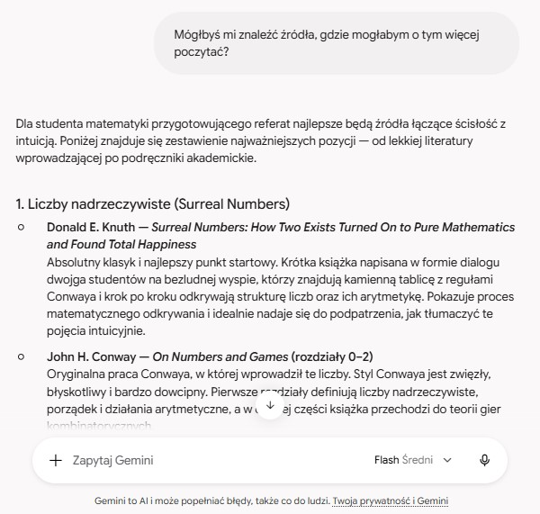
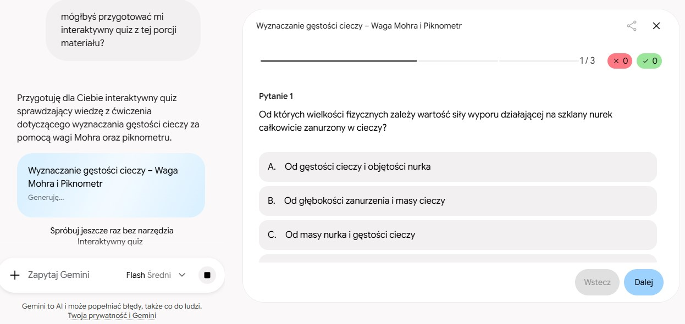

Gemini – wsparcie w procesie nauki i pracy akademickiej
Gemini stanowi w mojej codziennej pracy na studiach wszechstronne narzędzie optymalizujące proces przyswajania wiedzy. Jako zaawansowany model językowy wykracza on poza standardowe wyszukiwanie informacji, pełniąc funkcję interaktywnego asystenta edukacyjnego. Jego elastyczność pozwala na dostosowanie metod nauki do specyfiki konkretnego przedmiotu, co jest szczególnie istotne w przypadku nauk ścisłych.
Zamiast opierać się wyłącznie na biernym przyswajaniu tekstu, wykorzystuję sztuczną inteligencję do aktywnej pracy z materiałem. Poniżej zestawiam główne obszary, w których model ten najskuteczniej wspiera moją naukę i przygotowania do zajęć.


Praktyczne zastosowania w nauce
1. Dekonstrukcja dowodów matematycznych
Analiza złożonych dowodów często wymaga zmiany perspektywy. Wykorzystuję Gemini do rozkładania skomplikowanych twierdzeń matematycznych na czynniki pierwsze. Proszę model o wyjaśnienie poszczególnych kroków logicznych w maksymalnie uproszczony sposób, co pozwala na szybsze zrozumienie abstrakcyjnych koncepcji, które w klasycznych podręcznikach bywają opisane w mało przystępny sposób.
2. Aktywna weryfikacja wiedzy (fiszki i quizy)
W celu utrwalenia definicji, używam modelu do tworzenia spersonalizowanych fiszek oraz interaktywnych quizów, prosząc AI o bezpośrednie odpytywanie mnie z konkretnego zakresu. Dodatkowo, wprowadzając do systemu zadania przerabiane na ćwiczeniach, generuję nowe, analogiczne przykłady do rozwiązania. Pozwala to na praktyczny trening bez ryzyka odbiegania od poziomu trudności obowiązującego na danym przedmiocie.
3. Planowanie referatów naukowych
Podczas przygotowywania wystąpień na Naukowe Koło Matematyki (realizowałam m.in. referaty dotyczące testów pierwszości czy liczb nadrzeczywistych), Gemini pełni rolę asystenta badawczego. Wspiera mnie podczas burzy mózgów, pomaga w identyfikacji odpowiednich źródeł, a także krytycznie ocenia przygotowany konspekt, weryfikując, czy logiczna struktura prezentacji wyczerpuje kluczowe aspekty omawianego zagadnienia.
4. Synteza materiałów egzaminacyjnych
W okresie przygotowań do egzaminów teoretycznych wykorzystuję AI do kondensowania obszernych materiałów dydaktycznych. Na podstawie załączonych notatek, prezentacji z wykładów czy skryptów akademickich, model sprawnie analizuje treść i wyodrębnia z niej zwięzłą, uporządkowaną listę najważniejszych zagadnień do opanowania.
Podsumowanie
Podsumowując, Gemini stanowi fundamentalne wsparcie w mojej codziennej edukacji akademickiej, przekształcając proces uczenia się z biernego przyswajania informacji w aktywną, spersonalizowaną analizę. Dzięki funkcjom takim jak synteza obszernych skryptów czy logiczna dekonstrukcja złożonych dowodów matematycznych, narzędzie to znacząco optymalizuje czas poświęcany na naukę. W efekcie pozwala mi to nie tylko na szybsze, ale przede wszystkim na znacznie głębsze i bardziej ugruntowane zrozumienie opanowywanego materiału.